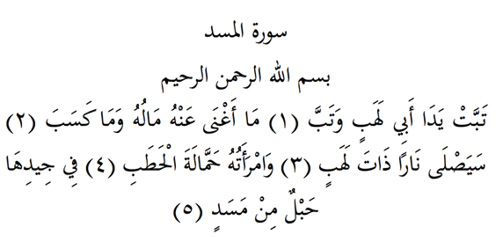

11

Mesed Suresi
Anlamı: Er-Rahman, er-Rahîm Allah’ın adıyla
Kahrolası Ebu Leheb, oldu bile (1). Ne servetinin ona yararı olacak, ne başka kazancının (2) Alevli bir ateşe yaslanacak yakında (3). Karısı da, odun hamalı olarak (4). Boynunda da örgü bir ip/zincir bulunacak (5).
Sure Hakkında:
Sure Peygamberliğin dördüncü yılında Mekke’de ve Fatiha Suresinin ardından indirilmiştir. Altıncı suredir. (İbn Aşûr)
Ebu Leheb Hz. Peygamber’in amcası idi ama ona inanmamıştı. Kendisi de, Hanımı Ümmü Cemil de Hz. Peygamber’e düşmanlık edip engel çıkarıyorlardı.
«Artık yakın akrabandan başlayarak insanları uyar» anlamındaki ayeti kerime gelince Efendimiz akrabalarını Safa Tepesinde topladı ve İslam’ı onlara ilan etti. Ebu Leheb buna çok kızdı ve: «kahrolası herif! Bizi bunun için mi buraya topladın?» dedi. Sure bu olay üzerine indirildi. (Buharî).
Tefsirciler surenin iniş sebebi olarak ikinci bir olay daha zikrederler: Bir gün Ebu Lehep Hz. Peygamber’e, «ben de sana inanırsam bunun karşılığı ne olur?» diye sordu. Efendimiz de (sa): «İnanan herkes neyi elde ederse sen de onu elde edersin» buyurdu. Ebu Leheb bundan hoşlanmadı ve: «Beni de sıradan insanların seviyesine indiriyorsun, kahrolası herif!» diye hakaret etti. Sure bu olay üzerine indirildi. (Taberî).
Ders
Din kardeşi olmadıktan sonra insanın yakınları dahi ona uzak sayılır. Ebu Leheb’ler her zaman olagelmiştir, olacaktır da. Ama kendilerinin sandıkları servetleri ve adamları dahi onlara yarar sağlamayacaktır. Gidecekleri yer, Ebu Leheb’in gittiği yer olacaktır. İşte Ebu Leheb böylelerinin sembolüdür.